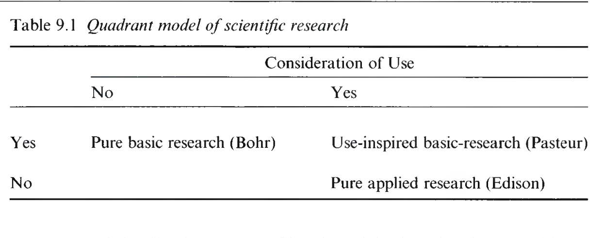
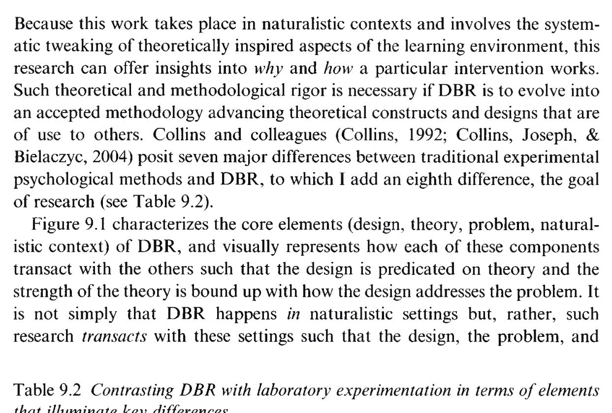
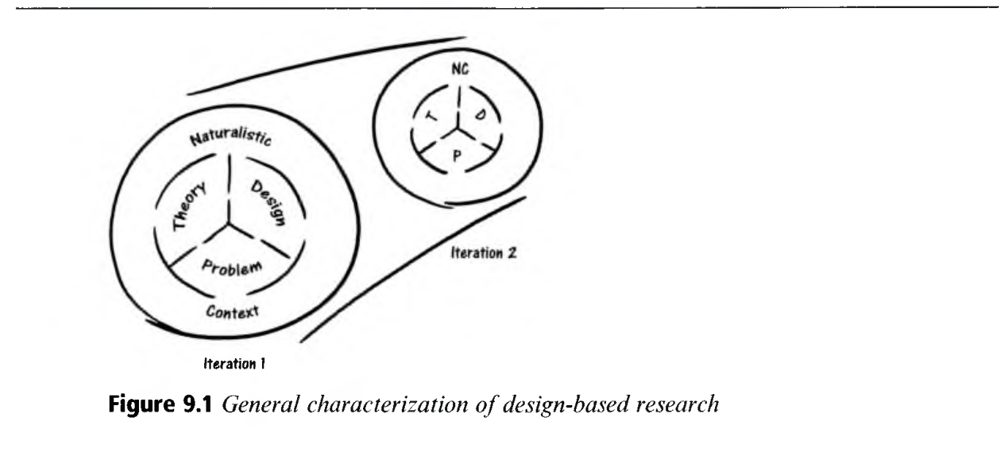
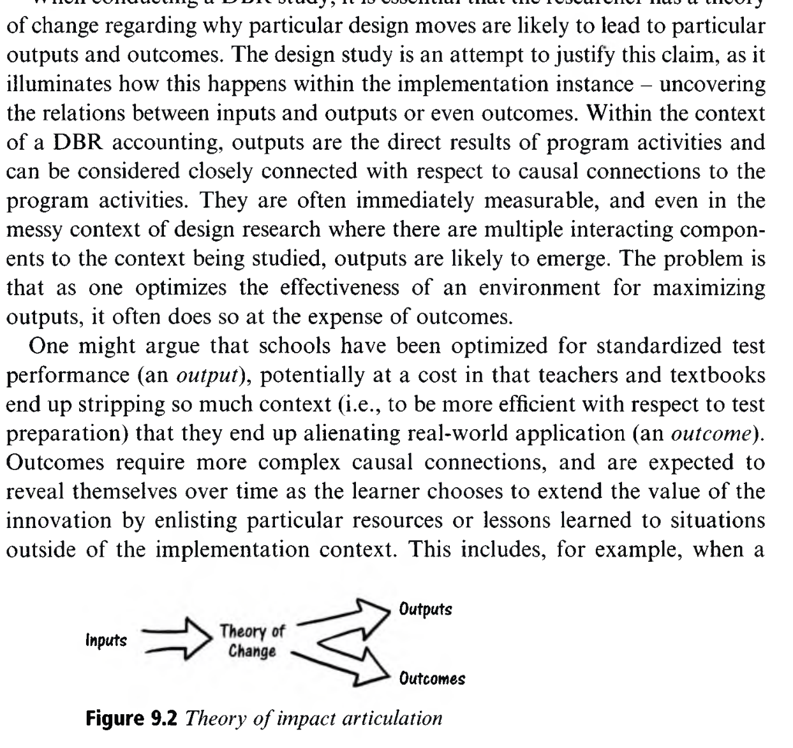

Design-Based Research
디자인 기반 연구: 파스퇴르 사분면의 과학, 반복적 설계 순환, 추측 매핑(Conjecture Mapping)
👥 저자 및 출처
Sasha Barab (Arizona State University)
『The Cambridge Handbook of the Learning Sciences』 (3rd Ed., 2022, pp. 177–196)
🎯 챕터 핵심 아젠다
- 파스퇴르 사분면 (Table 9.1): 이론 구축과 실제 개선의 동시 달성
- DBR vs 실험실 실험 (Table 9.2): 생태학적 타당도와 반복 순환
- 4대 요소 모델 (Figure 9.1): 이론, 디자인, 문제, 맥락의 상호작용
- 영향 이론 & 추측 매핑 (Figure 9.2): 매개 프로세스의 투명화
🎯 강의 목표 및 핵심 맥락 (Context & Goal)
본 장은 학습과학의 시그니처 연구 방법론인 '디자인 기반 연구(Design-Based Research, DBR)'의 철학적 토대와 구체적 실행 툴킷을 탐구하여, 제2부 연구 방법론(Part II: Methodologies)의 문을 엽니다.
📖 원문 심층 학술 해설 (Detailed Academic Commentary)
사샤 바랍(Sasha Barab)은 학습 환경 설계, 교육용 게임(Quest Atlantis), 변혁적 놀이(Transformative Play) 분야의 세계적 석학으로, DBR을 정립한 개척자 중 한 명입니다.
💡 수업/세미나 진행 팁 & 질문 가이드
"왜 실험실에서 성공한 완벽한 교육 프로그램이 실제 학교 교실에 들어가면 번번이 실패할까요?"라는 질문으로 시작하세요.
스토크스(Stokes)의 과학 연구 사분면 모델 (Table 9.1)
기초와 응용의 이분법을 넘어: 파스퇴르 사분면(Pasteur's Quadrant)의 탄생
🔬 2대 축에 의한 4대 사분면 구분
- 보어 사분면 (Bohr): 순수 기초 연구 (이론: 高, 실용: 低)
- 에디슨 사분면 (Edison): 순수 응용 연구 (이론: 低, 실용: 高)
- 파스퇴르 사분면 (Pasteur) ★ DBR ★: 용도 지향 기초 연구 (이론: 高, 실용: 高)
- ➔ 실제 교실을 개선하면서 동시에 학습 이론을 창출

🎯 강의 목표 및 핵심 맥락
도널드 스토크스(Stokes, 1997)의 과학 연구 사분면 모델을 통해 DBR이 위치한 학문적 좌표를 명확히 정립합니다.
📖 원문 심층 학술 해설
루이 파스퇴르가 백신이라는 '실용적 치료'를 위해 연구하다가 미생물학이라는 '기초 이론'을 세웠듯이, DBR은 교실 문제를 해결하는 설계 과정 속에서 심층 학습 이론을 산출합니다.
💡 수업/세미나 진행 팁 & 질문 가이드
우리 연구실의 연구가 보어, 에디슨, 파스퇴르 사분면 중 어디에 해당하는지 토론하세요.
전통적 실험실 연구의 치명적 한계
무균실 같은 통제 환경의 연구는 왜 실제 교실에서 무력해지는가?
🚫 실험실 실험의 3대 맹점
- 탈맥락화: 교실의 사회적 상호작용, 교사 역량, 문화 배제
- 변수 통제의 역설: 실제 교실은 수많은 변수가 얽힌 복잡계
- 생태학적 타당도(Ecological Validity) 파산: 실험실의 성공이 현장 성공을 보장하지 못함
💡 교실 생태계로의 패러다임 전환
- 연구실에서 교실을 엿보는 것이 아니라, 교실 안으로 뛰어듦
- 혼란과 복잡성을 통제 대상이 아닌 **핵심 연구 맥락**으로 수용
- 현장의 살아있는 상호작용을 있는 그대로 분석 (Brown, 1992)
🎯 강의 목표 및 핵심 맥락
전통적 실험실 연구가 지닌 생태학적 타당도의 한계를 밝히고, 왜 학습과학이 현장 기반 연구로 전환해야 했는지 설명합니다.
📖 원문 심층 학술 해설
앤 브라운(Brown, 1992)은 교실을 '생태학적 시스템'으로 보았습니다. 한 변수를 바꾸면 전체 생태계가 반응하므로, 단일 변수 분리 실험은 비현실적입니다.
💡 수업/세미나 진행 팁 & 질문 가이드
실험실에서 검증된 논문의 교육 앱이 실제 학교 수업에서 먹통이 되었던 경험을 나누어 보세요.
앤 브라운과 앨런 콜린스의 '디자인 실험(1992)'
학습과학 연구 방법론의 역사적 전환점이 된 두 편의 선구적 논문
🌱 Ann Brown (1992)
"Design Experiments: Theoretical and Methodological Challenges"
- 교실 생태계 안에서 복합 개입 프로그램을 투입
- 개입이 작동하는 인과적 메커니즘을 현장에서 직접 추적
📐 Allan Collins (1992)
"Toward a Design Science of Education"
- 항공공학이나 건축학처럼, 교육학도 **'디자인 과학(Design Science)'**이 되어야 함
- 설계 원리를 체계적으로 발전시키는 방법론 제창
🎯 강의 목표 및 핵심 맥락
1992년 앤 브라운과 앨런 콜린스가 제창한 '디자인 실험(Design Experiments)'의 역사적 의의를 조망합니다.
📖 원문 심층 학술 해설
이 두 논문은 "교육 연구는 자연과학적 관찰에 머물러선 안 되며, 인공물을 설계하고 테스트하는 공학적·임상적 개입 연구여야 한다"는 학습과학의 기본 정체성을 확립했습니다.
💡 수업/세미나 진행 팁 & 질문 가이드
의사가 환자를 치료하며 의학을 발전시키듯, 교육 연구자가 교실을 혁신하며 이론을 발전시키는 상동성을 토론하세요.
디자인 기반 연구(DBR)의 핵심 정의
실제적 문제 해결과 맥락화된 이론 발전을 동시에 달성하는 반복적 설계 연구
📌 DBR의 학술적 정의 (Barab & Squire, 2004)
"디자인 기반 연구(DBR)는 **실제적 자연 환경(Naturalistic contexts)** 속에서 특정 학습 개입(Interventions)을 지속적으로 **설계, 실행, 분석, 재설계하는 반복적 순환(Iterative cycles)**을 통해, 실제적 문제를 해결함과 동시에 **맥락화된 학습 이론(Contextualized theories)**을 산출하는 체계적이고 유연한 연구 방법론이다."
실용성 (Pragmatic)
현장의 실제 결핍과 고통을 해결하는 도구 개발
이론 지향 (Theory-driven)
단순 개발이 아닌 학습과학 이론의 검증과 진화
반복성 (Iterative)
나선형 사이클을 통한 설계의 지속적 정교화
🎯 강의 목표 및 핵심 맥락
DBR의 표준 학술 정의와 3대 핵심 속성(실용성, 이론 지향성, 반복성)을 분석합니다.
📖 원문 심층 학술 해설
DBR은 단순한 '소프트웨어 개발 프로젝트'도 아니고, 상아탑의 '순수 이론 논문'도 아닙니다. 설계 인공물(Artifact) 속에 이론적 가설이 구현되어 현장에서 검증되는 융합 연구입니다.
💡 수업/세미나 진행 팁 & 질문 가이드
DBR 논문이 일반 공학 개발 보고서와 어떻게 다른지 차별점을 찾아보세요.
DBR vs 실험실 실험 전면 비교 (Table 9.2)
연구 목표, 맥락, 변수 통제, 개입, 연구자 역할, 이론의 성격 대조
⚖️ 핵심 비교 차원 요약
- 맥락: 인위적 실험실 vs 실제 교실 현장
- 변수: 통제 및 고정 vs 생태학적 상호작용 총체적 수용
- 개입: 사전 고정 불변 vs **반복 순환을 통한 유연한 수정**
- 연구자: 거리 두는 관찰자 vs **공동 디자이너(Co-designer)**
- 이론: 탈맥락적 보편 법칙 vs **맥락화된 소박 이론 (Humble Theory)**

🎯 강의 목표 및 핵심 맥락
원서 Table 9.2를 통해 DBR과 실험실 실험의 6대 핵심 비교 차원을 완벽히 정리합니다.
📖 원문 심층 학술 해설
코브 등(Cobb et al., 2003)은 DBR이 산출하는 이론을 '소박 이론(Humble Theories)'이라고 불렀습니다. 모든 것을 설명하려는 거대 이론이 아니라, 특정 맥락에서 학습을 촉진하는 실천적 작동 이론을 의미합니다.
💡 수업/세미나 진행 팁 & 질문 가이드
연구자가 교실에 개입하는 것이 왜 '주관적 오염'이 아니라 '필수적인 설계 협업'인지 토론하세요.
DBR의 4대 핵심 상호작용 요소 (Figure 9.1)
이론(Theory), 디자인(Design), 문제(Problem), 자연적 맥락(Context)의 나선형 결합
🔄 4대 요소의 유기적 상호작용
- 맥락화된 이론: 설계 원리를 제공하고, 현장 검증을 통해 진화
- 혁신적 디자인: 이론적 가설이 물질적으로 구현된 개입 인공물
- 실제적 문제: 현장 교사와 학습자가 겪는 실질적 교육 결핍
- 자연적 맥락: 학교, 교실, 지역사회의 생태학적 실천 환경

🎯 강의 목표 및 핵심 맥락
원서 Figure 9.1을 통해 DBR을 구성하는 4대 핵심 요소의 상호작용 네트워크를 분석합니다.
📖 원문 심층 학술 해설
이 4개 요소 중 어느 하나라도 결여되면 참된 DBR이 될 수 없습니다. 이론 없는 디자인은 단순 개발이며, 문제 없는 이론은 공허한 사변입니다.
💡 수업/세미나 진행 팁 & 질문 가이드
자신의 연구 주제를 이 4개 요소(이론-디자인-문제-맥락)에 매핑해 보세요.
DBR의 나선형 반복 설계 순환 (Iterative Cycles)
설계(Design) ➔ 실행(Enact) ➔ 분석(Analyze) ➔ 재설계(Redesign)
1단계: 초기 설계
학습 이론에 기반하여 초기 프로토타입과 수업 비계 구안
2단계: 현장 실행
실제 교실에 투입하여 학생들의 상호작용 및 반응 관찰
3단계: 회고 분석
비디오, 로그, 인터뷰 데이터를 분석하여 예상치 못한 실패점 진단
4단계: 정교화 재설계
발견된 결함을 보완하여 차기 버전(Iteration 2, 3)으로 발전
🎯 강의 목표 및 핵심 맥락
DBR의 핵심 엔진인 4단계 나선형 반복 순환(Iterative Design Cycles)의 구체적 실행 메커니즘을 설명합니다.
📖 원문 심층 학술 해설
DBR에서 1차 실행(Iteration 1)의 실패는 연구의 결함이 아니라, 2차 실행을 위한 가장 소중한 이론적 데이터(귀중한 불일치)입니다.
💡 수업/세미나 진행 팁 & 질문 가이드
소프트웨어 개발의 애자일 스프린트(Sprint)와 DBR 반복 순환의 유사성을 비교하세요.
영향 이론 (Theory of Impact) 아키텍처 (Figure 9.2)
투입-산출 블랙박스를 해체하고 매개 학습 프로세스를 가시화한다
📈 5단계 인과적 영향 사슬
- 투입 (Inputs): 연구비, 교수 인프라, 기술 도구
- 산출 (Outputs): 개발된 커리큘럼, 워크시트, 소프트웨어
- 매개 프로세스 (Mediating Processes): 담화, 개념 변화, 정체성 발달
- 성과 (Outcomes): 개념적 이해도 향상, 문제해결력
- 영향 (Impact): 학교 문화 개선, 평생 학습 태도

🎯 강의 목표 및 핵심 맥락
원서 Figure 9.2를 통해 DBR이 추구하는 정밀한 인과 모델인 '영향 이론(Theory of Impact)'의 5단계를 분석합니다.
📖 원문 심층 학술 해설
단순 평가는 Outputs(프로그램 배포)에서 곧바로 Outcomes(성적)로 점프합니다. DBR은 중간의 '매개 학습 프로세스(Mediating Processes)'가 어떻게 일어났는지를 정밀하게 규명합니다.
💡 수업/세미나 진행 팁 & 질문 가이드
내 연구의 '도구 투입'이 학생의 어떤 '미시적 매개 상호작용'을 유발하는지 연결해 보세요.
샌도발의 추측 매핑 (Conjecture Mapping, 2014)
고차 이론적 가설을 구체적 설계 요소와 매개 프로세스로 정밀 매핑하는 도구
1. 고차 추측
High-level Conjecture: "상호작용 시각화가 개념 변화를 촉진할 것이다"
2. 구체화 (Embodiment)
Tools, Structures, Tasks: 시뮬레이션 인터페이스, 협력 토론 규칙, CER 프롬프트
3. 매개 프로세스
Mediating Processes: 학생 간 인지 갈등 발화, 증거 기반 반박 담화
4. 학습 성과
Outcomes: 과학적 멘탈 모델 정교화 및 원거리 전이 달성
🎯 강의 목표 및 핵심 맥락
윌리엄 샌도발(Sandoval, 2014)의 '추측 매핑(Conjecture Mapping)'의 4단계 프레임워크를 정립합니다.
📖 원문 심층 학술 해설
추측 매핑은 DBR 연구자가 자신의 설계 가설을 투명하게 공개하고, 데이터 수집 지점(어디서 매개 프로세스를 측정할 것인가)을 명확히 정의할 수 있게 해주는 최고의 분석 툴킷입니다.
💡 수업/세미나 진행 팁 & 질문 가이드
박사학위 연구 계획서 작성 시 '추측 매핑 표'를 반드시 포함해야 하는 이유를 강조하세요.
혁신을 넘어: 구조화된 초대와 변혁적 놀이
학습자를 피험자가 아닌 세상을 바꾸는 주체적 행위자로 참여시킨다 (Barab et al., 2010)
💌 구조화된 초대 (Structured Invitations)
- 도구는 단순한 소프트웨어가 아님
- 학습자를 특정 사회적 역할과 책임 있는 실천으로 이끄는 **초대장(Invitation)**
- 정서적 몰입과 윤리적 주체성 부여
🎮 변혁적 놀이 (Transformative Play: Quest Atlantis)
- 학생이 3D 가상 세계의 '수질 환경 조사관'으로 분장
- 실제 수질 데이터를 분석하고 공장장과 주민 간의 갈등 중재
- ➔ "내 과학적 지식과 의사결정이 세상을 변혁한다"는 효능감 체화
🎯 강의 목표 및 핵심 맥락
사샤 바랍의 대표 연구인 'Quest Atlantis'와 '변혁적 놀이(Transformative Play)'를 통해 DBR이 추구하는 참여 설계의 진수를 분석합니다.
📖 원문 심층 학술 해설
기술적 혁신은 그 자체로 교육적이지 않습니다. 학습자가 그 기술을 통해 자신을 '주체적 변혁자(Agent)'로 인식하게 만드는 서사와 사회문화적 참여 구조가 결합되어야 합니다.
💡 수업/세미나 진행 팁 & 질문 가이드
게이미피케이션(점수/배지)과 진정한 '변혁적 놀이(역할/윤리적 결정)'의 질적 차이를 토론하세요.
단일 디자인에서 확장 가능한 시스템으로
확장성(Scalability)과 지속가능성(Sustainability)을 위한 실행 과학과의 결합
🚫 '반짝 성공'의 함정 (부티크 프로젝트)
- 연구자가 교실에 상주하며 밀착 지원할 때는 성공
- 연구자가 떠나고 다른 일반 학교로 확산되면 즉시 실패
- 학교 행정, 교사 업무 부하, 교육과정 표준 무시가 원인
⚙️ 실행 과학 (Implementation Science)과의 정렬
- 교사 연수 프로그램과 학교 관리자 지원 체계 동시 설계
- 국가 교육과정 표준 및 평가 제도와의 **제도적 정렬(Systemic Alignment)**
- ➔ 연구자가 떠나도 스스로 굴러가는 지속가능한 시스템 구축
🎯 강의 목표 및 핵심 맥락
DBR의 치명적 약점인 '확장성(Scalability)' 한계를 극복하기 위해 실행 과학(Implementation Science)과 결합하는 현대 DBR의 발전 방향을 설명합니다.
📖 원문 심층 학술 해설
완벽한 소프트웨어라도 교사의 일상 수업 부담을 가중시키면 사장됩니다. 교사의 실천 역량과 학교 조직의 지원 생태계를 설계의 필수 변수로 다루어야 합니다.
💡 수업/세미나 진행 팁 & 질문 가이드
혁신 교육 정책이 왜 3년을 넘기지 못하고 사라지는지 시스템적 관점에서 분석해 보세요.
DBR의 방법론적 엄밀성: 다중 데이터 삼각측량
정량 로그와 정성 담화의 결합을 통한 인과적 타당도 확보
1. 컴퓨터 시스템 로그
클릭 스트림, 체류 시간, 코드 커밋, 시뮬레이션 조작 궤적 (정량 객관 데이터)
2. 비디오 담화 상호작용
모둠별 발화, 제스처, 신체 배치, 상호작용 분석(IA) (미시적 정성 데이터)
3. 사전/사후 성과 및 인터뷰
개념 검사 점수, 전이 과제 수행물, 씽크 얼라우드 심층 면담 (종합 성과 데이터)
🎯 강의 목표 및 핵심 맥락
DBR이 비판받기 쉬운 '연구자의 주관성' 문제를 다중 데이터 삼각측량(Triangulation)으로 어떻게 극복하는지 설명합니다.
📖 원문 심층 학술 해설
시스템 로그로 거시적 패턴을 잡고, 비디오 분석으로 미시적 인과 기제를 포착하며, 사전사후 검사로 최종 효과를 입증하는 3각 결합이 DBR의 엄밀성을 보장합니다.
💡 수업/세미나 진행 팁 & 질문 가이드
다중모달 학습분석(MMLA) 기술이 DBR의 데이터 삼각측량을 어떻게 혁신하고 있는지 토론하세요.
스토리에서 진리로: '스토리화된 진리(Storied Truths)'
"어떤 맥락 조건에서 어떤 설계 요소가 어떻게 작동했는가"를 입증하는 증거 기반 내러티브
🚫 무미건조한 통계 진리의 한계
- "프로그램 적용 후 $p < .05$로 성적이 향상되었다"
- 왜 올랐는지, 어떤 학생에게 통했고 어떤 조건에서 작동했는지 알 수 없음 (블랙박스)
- 다른 교실에 적용할 실천적 처방을 주지 못함
📖 스토리화된 진리 (Storied Truths)
- 맥락 조건, 설계 요소의 작동, 실패와 재설계의 전 과정을 포괄
- 풍부한 질적 증거와 정량 데이터가 결합된 인과적 내러티브 보증(Narrative Warrants)
- 다른 실천가가 자신의 맥락에 맞게 재해석하여 적용 가능한 **살아있는 지혜**
🎯 강의 목표 및 핵심 맥락
사샤 바랍이 주창한 '스토리화된 진리(Storied Truths)'의 인식론적 가치와 교육학적 의의를 규명합니다.
📖 원문 심층 학술 해설
스토리화된 진리는 단순한 '이야기'가 아닙니다. 엄밀한 경험적 증거로 뒷받침된 인과적 설계 내러티브이며, 교사들이 실제 현장에서 가장 강력하게 신뢰하는 지식 형태입니다.
💡 수업/세미나 진행 팁 & 질문 가이드
의사의 '임상 증례 보고(Case Report)'가 어떻게 의학 발전에 결정적 기여를 하는지와 비교해 보세요.
교사와 학습자를 '공동 디자이너(Co-designers)'로
연구자가 군림하는 상아탑 연구에서 벗어나 현장과 함께 만드는 민주적 연구
🚫 전통적 연구의 권력 위계
- 연구자: 이론을 만들고 처방을 내리는 엘리트
- 교사: 시키는 대로 실행하는 단순 집행자
- 학생: 반응을 측정당하는 수동적 피험자
🤝 DBR의 참여적 공동 설계 (Co-design)
- 교사: 교실 생태계의 최고 전문가이자 동등한 연구 파트너
- 학생: 자신의 학습 경험을 피드백하는 능동적 평가자
- 연구자: 설계 비계와 이론적 통찰을 지원하는 퍼실리테이터
🎯 강의 목표 및 핵심 맥락
DBR이 지향하는 참여적 연구 윤리와 '교사-연구자 공동 설계(Co-design)'의 민주적 패러다임을 설명합니다.
📖 원문 심층 학술 해설
현장 교사의 실천적 지혜(Tacit Knowledge)가 설계에 반영되지 않으면 그 어떤 뛰어난 이론도 교실에서 살아남을 수 없습니다. DBR은 교사를 지식의 공동 창조자로 존중합니다.
💡 수업/세미나 진행 팁 & 질문 가이드
교원학습공동체(PLC)와 대학 연구팀이 결합하는 'DBR 연구 협의체' 모델을 구상해 보세요.
DBR 연구 실행을 위한 5단계 표준 워크플로
문제 발굴에서 추측 매핑, 반복 실행, 이론화까지
1. 문제 진단
현장 교사와 함께 실제 교실의 핵심 인지적 병목 발굴
2. 추측 매핑
이론적 고차 가설을 도구, 과제, 담화 규범으로 구체화
3. 현장 실행
실제 교실에 투입하고 다중 데이터 삼각측량 수집
4. 회고 재설계
모순점 분석 후 2차, 3차 이터레이션 반복 순환
5. 소박 이론화
설계 원리와 맥락화된 스토리화된 진리 도출
🎯 강의 목표 및 핵심 맥락
학습과학자가 실제 DBR 연구를 수행할 때 따르는 5단계 표준 워크플로를 일목요연하게 정리합니다.
📖 원문 심층 학술 해설
이 워크플로는 석·박사 학위 논문이나 대형 교육 R&D 프로젝트를 기획할 때 가장 표준적이고 강력한 연구 설계 뼈대가 됩니다.
💡 수업/세미나 진행 팁 & 질문 가이드
자신의 연구 계획을 이 5단계 워크플로 표로 작성해 보도록 안내하세요.
학습과학의 시그니처 방법론으로서의 DBR
왜 DBR은 학습과학(Learning Sciences)을 정의하는 방법론인가?
학제적 융합의 용광로
인지과학, 컴퓨터공학, 교육사회학, 문화인류학이 설계 인공물 속에서 통합
실천적 영향력의 보증
단순 논문 출판에 그치지 않고 실제 학교 현장의 교수학습 문화를 혁신
생태학적 이론 진화
복잡한 실세계 맥락 속에서 검증된 강력하고 탄력적인 학습 이론 구축
🎯 강의 목표 및 핵심 맥락
DBR이 왜 학습과학이라는 학문 분과의 독보적인 '시그니처 방법론(Flagship Methodology)'인지를 총괄 정리합니다.
📖 원문 심층 학술 해설
학습과학은 인간의 학습을 연구하되 반드시 더 나은 학습 환경을 '디자인'함으로써 연구합니다. 디자인과 연구의 이 불가분의 결합이 학습과학을 다른 모든 인접 학문과 구별 짓는 핵심입니다.
💡 수업/세미나 진행 팁 & 질문 가이드
"연구 없는 디자인은 맹목이고, 디자인 없는 연구는 공허하다"는 명언을 공유하세요.
컴퓨터교육에서 DBR의 눈부신 활약
블록 코딩 환경, 교육용 IDE, 지능형 튜터 시스템(ITS)의 진화
🧱 스크래치(Scratch)와 앱 인벤터의 탄생
- 초기 MIT 미디어랩의 DBR 반복 순환 연구로 개발
- 아이들이 문법 에러(Syntax Error)로 좌절하는 교실 모순 관찰
- ➔ 블록 결합 인터페이스(디자인 구체화)로 재설계하여 전 세계 확산
💻 Python Tutor 및 대화형 시각화 도구
- 메모리 상태와 콜 스택을 시각화하는 DBR 반복 연구
- 초보자의 멘탈 모델 병목을 진단하고 피드백 루프를 점진적 최적화
🎯 강의 목표 및 핵심 맥락
우리가 매일 사용하는 스크래치(Scratch)나 파이썬 튜터(Python Tutor) 같은 위대한 컴퓨팅 교육 도구들이 모두 DBR의 산물임을 밝힙니다.
📖 원문 심층 학술 해설
미첼 레스닉(Mitchel Resnick)의 스크래치 팀은 수년간 방과후 클럽(Computer Clubhouse)에서 아이들의 시행착오를 관찰하며 블록의 모양과 기능을 수없이 재설계(Iteration)했습니다.
💡 수업/세미나 진행 팁 & 질문 가이드
현재 정보 수업에서 쓰고 있는 도구의 불편한 점을 찾아 '다음 이터레이션'을 상상해 보세요.
생성형 AI 시대의 차세대 DBR 혁신
실시간 데이터 피드백과 생성형 AI 기반의 고속 적응형 설계 순환
⚡ 고속 이터레이션 (Rapid AI-assisted Prototyping)
- 과거 수개월이 걸리던 소프트웨어 재설계 주기를 며칠로 단축
- 학생 로그 데이터를 LLM이 실시간 분석하여 교사에게 개입 프롬프트 제안
- 초개인화된 적응형 비계의 실시간 진화
🌐 대규모 다기관 DBR 네트워크 (NIC)
- 네트워크화된 개선 공동체(Networked Improvement Communities)
- 수백 개 학교가 동일한 추측 맵을 공유하며 분산적으로 설계 검증
🎯 강의 목표 및 핵심 맥락
생성형 AI와 클라우드 데이터 파이프라인이 DBR의 반복 설계 속도와 규모를 어떻게 비약적으로 확장하고 있는지 미래 지평을 조망합니다.
📖 원문 심층 학술 해설
AI는 연구자가 수작업으로 하던 질적 비디오 코딩과 로그 분석을 보조하여, 현장에서 거의 실시간으로(Just-in-time) 설계를 수정할 수 있는 초고속 DBR 환경을 가능하게 합니다.
💡 수업/세미나 진행 팁 & 질문 가이드
AI가 DBR 연구자의 역할을 대체할 것인가, 아니면 더 강력한 공동 디자이너로 만들 것인가를 토론하세요.
디자인 기반 연구(DBR)의 핵심 원리 총괄
학습과학자가 가슴에 새겨야 할 3대 연구 신조
파스퇴르 사분면
현장의 고통을 해결하는 실용성과 심층 학습 이론의 융합
추측 매핑과 나선형 순환
이론적 가설의 투명한 구체화와 끊임없는 재설계
스토리화된 진리
맥락과 과정이 살아 숨 쉬는 증거 기반의 실천적 지혜
🎯 강의 목표 및 핵심 맥락
Chapter 09의 핵심 교훈을 3대 신조(파스퇴르 사분면, 추측 매핑/나선 순환, 스토리화된 진리)로 압축 요약합니다.
📖 원문 심층 학술 해설
DBR은 단순한 연구 기법이 아니라 세상을 대하는 학습과학자의 태도입니다. 우리는 완벽한 정답을 한 번에 만들 수 없음을 겸허히 인정하고, 현장과 함께 끊임없이 나선형으로 진화해 나갑니다.
💡 수업/세미나 진행 팁 & 질문 가이드
"여러분이 현장에서 풀고 싶은 가장 뜨거운 교육적 문제는 무엇입니까?"를 질문하세요.
Part II 연구 방법론 대장정의 서막을 열며
DBR에서 상호작용 분석, 미시발생, 비디오 연구, 교육 데이터 마이닝으로
Ch 09 DBR
반복적 설계와 현장 개선
Ch 10 상호작용
협력 담화와 신체 배치 분석
Ch 11 미시발생
개념 진화의 초정밀 추적
Ch 12~14 분석
비디오, EDM, ENA 융합
🎯 강의 목표 및 핵심 맥락
Chapter 09를 마무리하고, 제2부 연구 방법론(Part II: Methodologies, Ch 09~14)의 전체 로드맵을 제시합니다.
📖 원문 심층 학술 해설
Part II는 DBR이라는 총괄 설계 틀 안에서, 미시적 상호작용 분석(Ch 10), 미시발생적 추적(Ch 11), 비디오 연구(Ch 12), 교육 데이터 마이닝(Ch 13), 네트워크 분석(Ch 14) 등 학습과학의 최첨단 툴킷들을 하나씩 정복해 나갈 것입니다.
💡 수업/세미나 진행 팁 & 질문 가이드
다음 Chapter 10(Analyzing Collaboration: 상호작용 분석)을 기대하며 본 슬라이드를 마무리하세요.